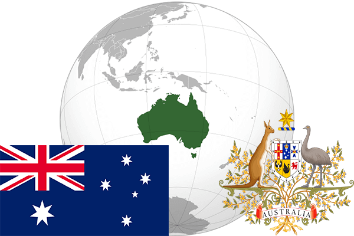

To`liq nomi: Avstraliya Ittifoqi
Region: Avstraliya
Qonunchilik shakli: Federativ davlat
Mustaqillik kuni: 1 yanvar 1901 yil, Birlashgan Qirolligidan
Poytaxti: Kanberra
Maydoni: 7 692 024 km² (dunyoda 6 -o`rinda )
Chegaradosh davlatlari: yo`q
Aholisi: 24 067 700 (dunyoda 55 -o`rinda ) 2016 -yil roʻyxat
Aholi zichligi: 2,8 /km²
Aholining o`rtacha yoshi: 80,7 yil ( 83,6 ayollar, 77,8 erkaklar)
Rasmiy tili: Ingliz tili
Dini: Xristian
Pul birligi: Avstraliya dollari
Telefon prefiksi: +61
Internet domen: .au
Xalqaro tashkilotlarga a`zoligi: BMT (1945 -yildan), Osiyo-Tinch okeani iqtisodiy hamkorlik tashkiloti
Dengiz va okeanlarga chiqishi: Korol , Tasman, Arafus va Timor dengizlari
YIM: Butun: $ 1.137 trillion, Jon boshiga: $ 47 318 (2015 - yil roʻyxati)
Yirik shaharlari: Sidney, Melburn, Brisben, Pert, Adelaida, Gold-Kost